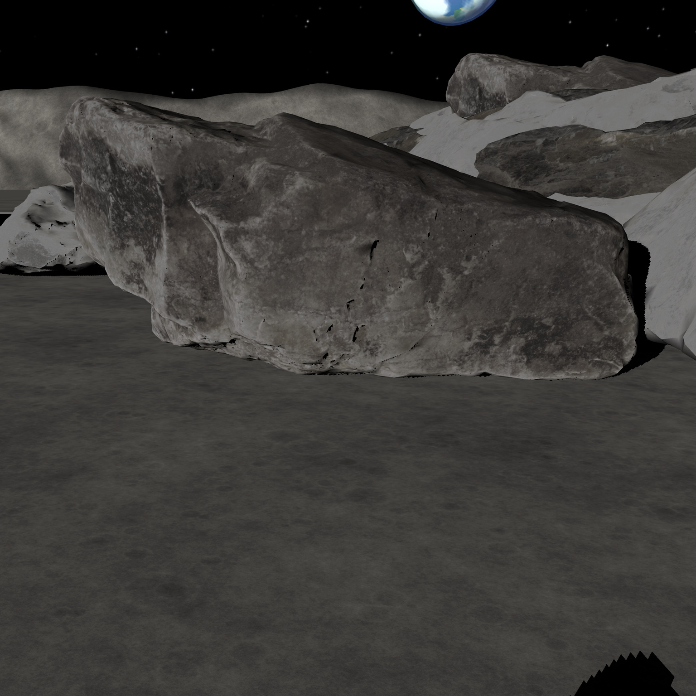
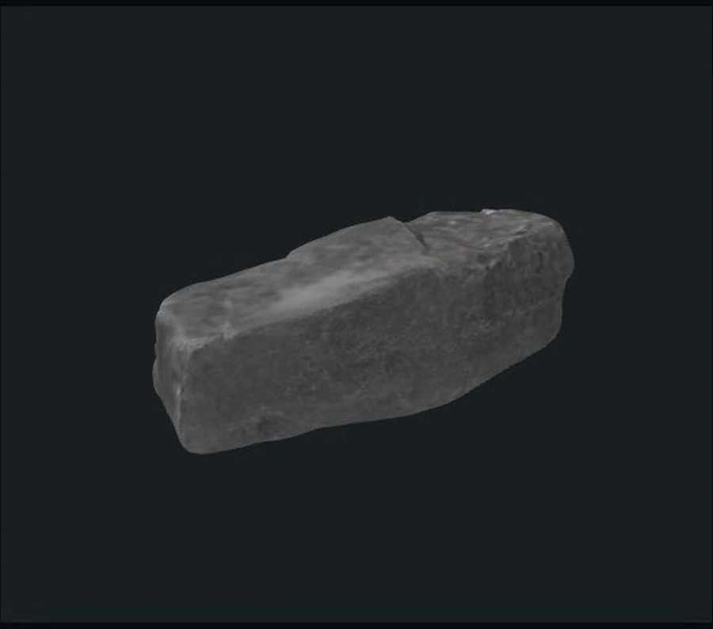
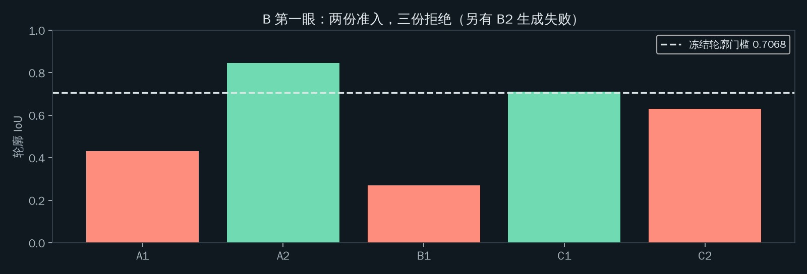
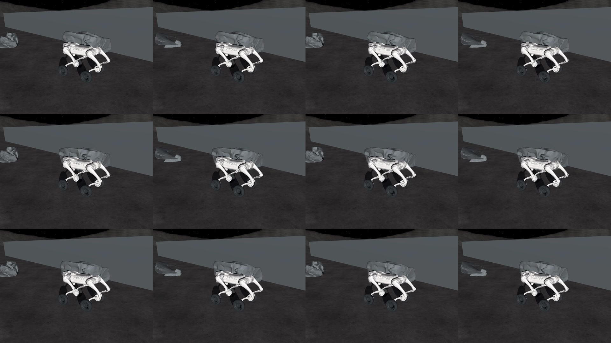
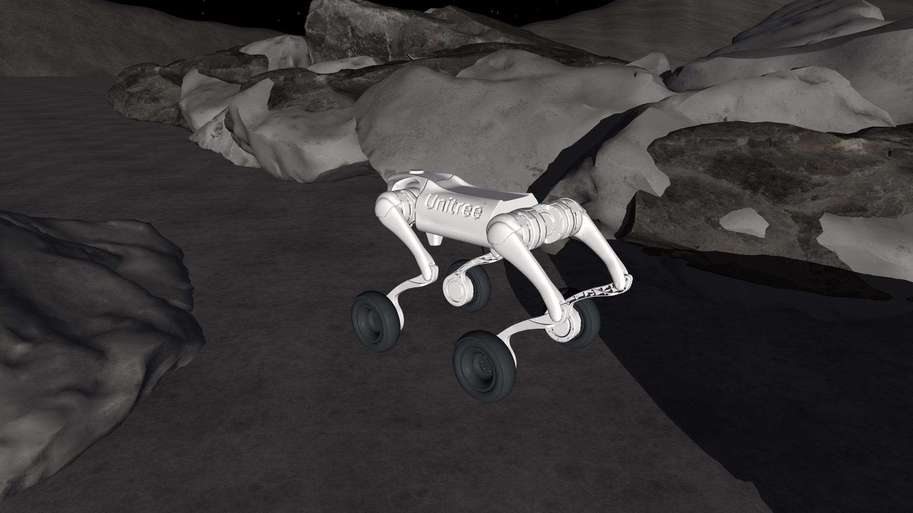

机器人拍到的照片01 / INPUT

真实上传的原图查看照片 ↗
AHOLO LUX3D / 从照片到三维
机器人拍到一张石头照片，交给 Lux3D，拿回整块石头的 3D 模型。后续的核对、预演和行动，都从这份模型开始。


二者来自同一个真实 Lux3D 任务 5958685，按原字节保留。这里直接加载返回的原 GLB，由官方 @manycore/aholo-viewer 1.14.0 显示。下载原模型 · 照片、模型与来源记录 · 继续逛模型陈列室
THE REAL DEMO / 原始产物与运行画面
真实照片、返回模型、官方 Viewer 展示，以及机器人在想象世界和原场景中的行动。中文配音与同稿字幕。
视频暂时未加载，可以通过上方“下载完整视频”打开。
AFTER THE MODEL / 所有判断从这里开始
用生成模型补上背面的形状，对照观测，再在模型构成的世界里预演路线。
把模型和机器人拍到的可见部分核对，选出吻合的模型，用于后面的路线预演。

R1 原始核对结果通过核对的不同模型组成十二个世界。在每个世界里，让同一台机器人把候选路线完整走完。

R1 · 六份 A × 两份 B，十二个组合机器人根据各个模型中的路线预演，选择执行、补充观察或停车。

R1 · 利用 Lux3D 模型完成绕行Lux3D 把照片变成完整的三维形状；BeforeStep 用这些形状做观测核对和路线预演。
LUX3D IN ACTION / 模型参与实际运行
完整形状进入了路线判断，模型在作品中的作用可以从实际运行里看到。
R1 中，机器人观察一眼，利用生成模型核对和预演路线，完成绕行，并在 112.84 秒到达终点。
看 R1 的实际运行 ↗六份石头 A 模型与两份石头 B 模型组成十二个世界。机器人在每个组合中走完候选路线，再据此选择行动。
观看完整路线预演 ↗预先固定的场景组中，按统一标准识别出八个难场景。生成模型参与核对与预演，帮助机器人完成其中三场通行。
查看完整对照实验 ↗EXPLORE THE EVIDENCE / 自己转一转，自己查一查
输入照片、生成模型、运行记录和源代码，可以从这里继续查看。项目报告已更新为正式 v3。